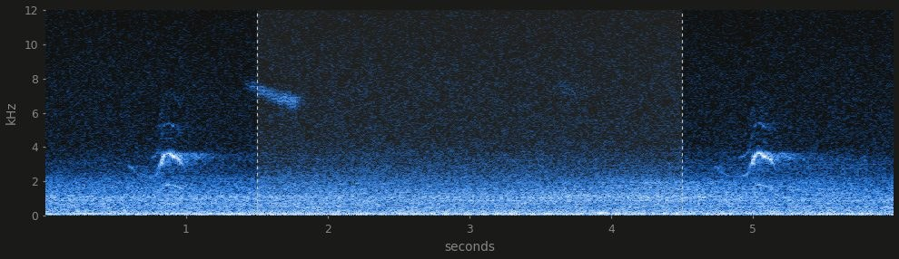
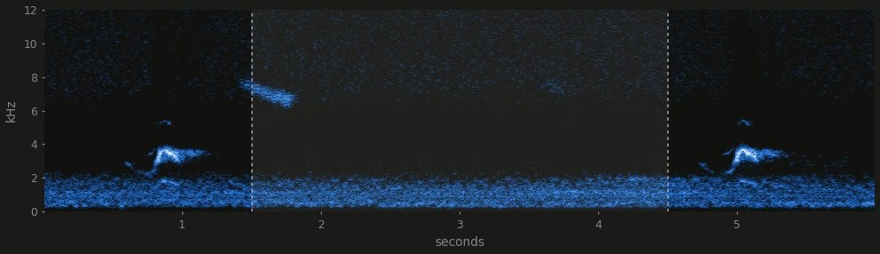

Division IV · Project Documentation
An old Galaxy S9+ with a new battery and a custom Android app. It records nights of sound, takes photos and video on a schedule, answers over Telegram, and hands its audio to a PC that works out which birds flew past.
A US Snapdragon S9+ stuck on Android 10 with a locked bootloader, so no root and no custom ROM. Its worn battery was replaced and a charge test passed before any app work started.
Kotlin and Jetpack Compose, installed over adb as the phone's Device Owner. That gives it silent permissions, boot start and freedom from Samsung's battery killer, all without root.
Ten hours of audio from a window goes through BirdNET on the PC. The result is a report of species, call times, clips and spectrograms, published to the logbook.
Overview
The phone only records and answers. All the analysis runs afterwards on the PC, on the CPU, with nothing sent to an outside service until the finished report is published.
ON THE PHONE
planner ── jobs saved, reconciled after a reboot, app update or clock change
│
├── sound hourly WAVs, 48 kHz mono, about 345 MB per hour
├── photos /snap, or a job every 1 s and up, optional timelapse
└── video /clip, or a job of clips on a schedule
│
└── Telegram bot: commands, alerts, photos and files up to 50 MB
ON THE PC
bird_night.py
│ pull the night over WiFi adb, then drop the link
├── BirdNET 2.4 species, confidence, call times
├── Perch v2 optional second opinion, about 30 min a night
└── report one page per night
ONLINE
publish_site.py ──► Cloudflare Pages: MP3 clips and JPEG spectrograms, about 5 MB a nightThe app
Audio, photo and video work all go through one planner, including manual recordings, which are temporary jobs. That means a recording started by hand also survives a reboot.
An app update resumes a recording about a second later. A reboot in mid-recording resumed after a gap of about 48 s when it was tested. The WAV header syncs every 10 s, so a cut-off file loses 10 s at most.
The phone doesn't delete recordings by itself. If free space falls below 2 GB, nothing new starts and a running recording stops with an alert. Raw WAVs are only ever read or copied, never changed.
A plugged-in mic takes over from the built-in one, and that route offers raw UNPROCESSED audio. The usual mic now is a BOYA BY-M1 on a long cable with a furry windscreen.
Remote control
The bot answers only its paired owner. On the charger it replies instantly, and on battery it checks in every few minutes so the phone can sleep. These are the main commands.
| Command | What it does |
|---|---|
/status | Battery, storage, recorder and network at a glance |
/plan | What's planned for the next 7 days |
/night 22:00 08:00 daily | Set the bird night, for tonight only or every night |
/rec 60 · /stop | Record now for 60 minutes, or stop the recording while keeping the plan |
/snap front flash | A photo now, with options for camera, flash, focus and zoom |
/snapjob every 10s for 1h stitch | Photos on a grid, optionally stitched into a timelapse on the phone |
/clip 2 | A 2-minute video now, sent when it's done |
/clipjob 30s every 5 for 2h | A clip every 5 minutes, kept on the phone, with a frame of each sent |
/files · /get | Browse what's recorded and send a file, up to 50 MB |
/stopall · /resume | Stop everything and hold all jobs, then carry on. The hold survives a reboot |
/mode · /awake 15 | Choose instant or battery-saving replies, or stay responsive for 15 minutes |
/data · /cap 2 | Mobile data used per app, and a daily limit for the bot |
The analysis
BirdNET 2.4 from the Cornell Lab and TU Chemnitz runs locally and only considers species plausible for this location and week of the year. Each species then gets a rating.
| Rating | Rule |
|---|---|
| Confirmed | One match of at least 70%, or 3 or more matches of at least 50% |
| Probable | A best match of at least 50% |
| Unconfirmed | Everything else. Detections below 25% are never shown |
| Other sounds | Dogs, engines, sirens and human voices are listed with times only. No clips of them are kept, so that people's conversations stay out of the report |
Google's Perch v2 adds a second opinion. On this audio it's mostly noise, so the report only keeps UK mammals and amphibians, birds BirdNET also heard weakly, and an unverified table of what only Perch heard.
Listening
The logbook's clips play a cleaned copy by default, and one button switches to the raw recording. Where a recording spot has enough traffic-only moments, the site learns six fingerprints of that road and subtracts them. Elsewhere it falls back to a high-pass filter and spectral gating.


On the test night the road band dropped about 15 dB, against 1 to 4 dB with the generic cleaning. It's for human ears only. Any cleaning made BirdNET less sure (85% raw, 69% generic, 60% road), so BirdNET always gets the raw audio.
Measurements
Most design choices came from these tests, so an estimate only stayed in until it could be measured. The figures use the battery's own charge counter, because polling the current over adb keeps the phone awake and spoils the reading.
| State | Drain | Roughly |
|---|---|---|
| Bot in eco mode, on WiFi | 13 mA | 11 days on a full battery |
| Bot in instant mode | ~30 mA | 5 days |
| Recording a night | ~41 mA | 14% of the battery for 10 hours |
| Overnight idle with SIM | 11.8 mA | 12.4 days |
| Overnight idle, airplane mode with WiFi kept | 9.4 mA | 15.5 days, so the SIM costs about 2.4 mA |
| Photo every 1 s, camera kept open | ~280 mA | About 0.08 mAh a photo, at full size |
| Photo with the camera closed between shots | ~0.48 mAh | Per photo. A photo every minute averages about 41 mA |
Idle battery use was far too high, and the cause turned out to be the debugging link itself. With WiFi adb connected the phone woke about 2,300 times an hour, against about 30 without it. Every tool now closes the link when it's done.
Closing the camera between shots made frames jump about 13 px, which the stabiliser caused, so it's now off. The flicker in 1 s runs dropped from a median step of 5.20 to 0.06 by locking exposure and white balance between re-meters.
On battery, Android's deep sleep stalls a bot that tries to stay connected. Eco mode uses alarms that still fire in deep sleep, and /awake chains alarm-clock alarms to pull the phone out of it.
Limits